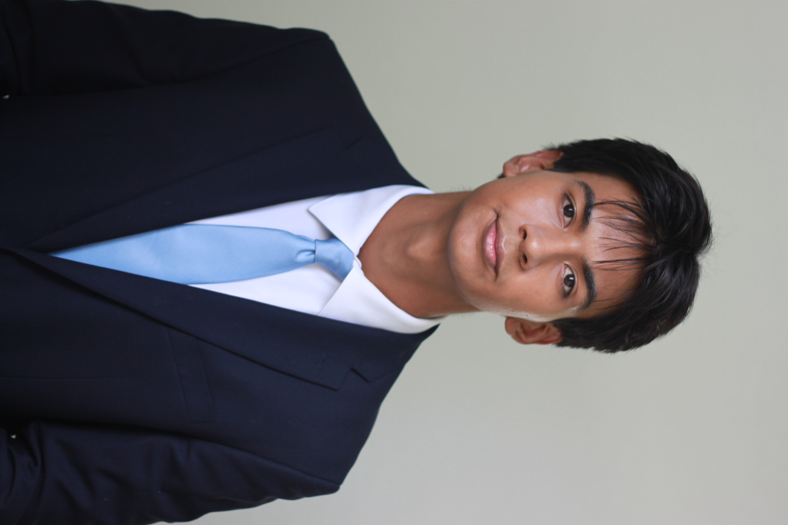

Clinical Experience
Clinical Volunteer
Support patients, visitors, and hospital staff on the floor — direct, weekly exposure to patient care, hospital operations, and professional communication.
Pre-Med Portfolio
I’m a Biological Sciences student at Florida International University on the pre-med track, gaining hands-on experience in clinical care and physical therapy while preparing for research in biomechanics, rehabilitation science, and musculoskeletal medicine.

Future physician interested in orthopedic surgery, sports medicine, and human performance.
About Me
Strength training has been part of my life for the past five years, and it sparked my interest in how the human body adapts, recovers, and performs. That curiosity led me toward medicine — especially the fields connected to anatomy, rehabilitation, and musculoskeletal health.
I’m building my foundation through hospital volunteering, physical therapy shadowing, and preparation for undergraduate research. My long-term goal is to become a physician who combines scientific curiosity, clinical discipline, and meaningful patient care.
Experience
Clinical Experience
Support patients, visitors, and hospital staff on the floor — direct, weekly exposure to patient care, hospital operations, and professional communication.
Shadowing
Observed rehabilitation sessions, patient evaluations, therapeutic exercise, and principles of musculoskeletal recovery.
Community Service
Nearly four years of continuous service — supporting community programs, event logistics, and public-facing operations.
Past Experience
Handled documentation, data organization, and technical support for a small IT firm.
Research Interests
Timeline
Started long-term community service at Parkland Library.
Completed IT internship and developed professional communication skills.
Began pre-med track at Florida International University.
Started hospital volunteering and physical therapy shadowing.
Seeking undergraduate research in biomechanics, rehabilitation, or musculoskeletal science.
Contact
I welcome opportunities related to research, clinical volunteering, shadowing, mentorship, and pre-medical development.